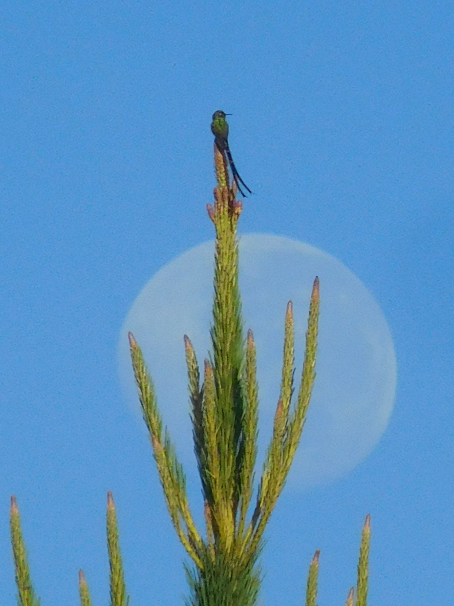
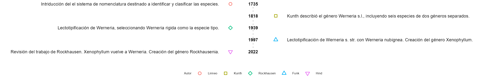

13 Clasificación de los seres vivos

La vida en nuestro planeta se manifiesta en una asombrosa variedad de formas y estructuras. Esta diversidad es el resultado de distintos tipos de organización celular, así como de la especialización en tejidos, órganos y sistemas que presentan los seres vivos.
Ante esta enorme diversidad, surge la necesidad de desarrollar herramientas que nos permitan entender y comunicar de manera efectiva sobre los seres vivos. Aquí es donde aparecen dos conceptos clave. En primer lugar, se requiere un sistema de nomenclatura internacional, que nos permita identificar y referirnos a cada organismo de manera precisa. Este sistema ayuda a evitar confusiones y asegura que, sin importar nuestro idioma, todos podamos hablar sobre las mismas cosas.
En segundo lugar, la clasificación se convierte en una herramienta esencial. Clasificar a los seres vivos según sus similitudes facilita enormemente el estudio de la vida en todas sus formas. Gracias a esta clasificación, podemos identificar patrones, comprender relaciones evolutivas y explorar las maravillas de la biodiversidad.
Tanto la nomenclatura como la clasificación son las herramientas que nos permiten explorar y entender el fascinante mundo de la vida en la Tierra.
13.1 Nomenclatura de los seres vivos
En 1735, el naturalista sueco Carlos Linneo introdujo un sistema de nomenclatura destinado a identificar y clasificar las especies. Este método, conocido como sistema binomial, implica el uso de dos nombres: uno para el género y otro para la especie y es el sistema que utilizamos en la actualidad.
Tal y como propuso Linneo, el nombre que recibe cada especie lo conocemos como nombre científico y consta, de dos partes: el nombre genérico y el epíteto específico. A los nombres científicos debemos escribirlos siempre en cursiva (solo cuando no sea posible usar la cursiva escribiremos con subrayado). A la inicial del nombre genérico la escribimos siempre con mayúscula, mientras que al epíteto específico lo escribimos con minúscula. Por ejemplo, el nombre científico del puma es Puma concolor y el del cóndor es Vultur gryphus. Junto al nombre científico se suele agregar una abreviatura que corresponde al autor que describió por primera vez el taxón, por ejemplo Culcitium canescens Humb. & Bonpl., planta descubierta por Alexander von Humboldt y Aimé Bonpland en 1808.
Los nombres científicos de los taxones que se encuentran en categorías taxonómicas superiores a la especie son uninominales, es decir están compuestos por una sola palabra. No se suelen utilizar cursivas para familias ni rangos superiores.
Al nombre genérico lo podemos utilizar por sí solo, esto cuando hacemos referencia al colectivo de especies que pertenecen al mismo género. Por ejemplo, tanto el caballo como la cebra pertenecen al género Equus. Sin embargo, el epíteto específico no puede ser utilizado sin el nombre genérico. De hecho, existen especies que tienen el mismo epíteto específico y no tienen ningún parentesco como Atelopus ignescens, el jambato negro, anfibio emblemático de los Andes ecuatorianos; y Megachile ignescens, una abeja cortadora de hojas nativa de Australia. Al epíteto específico lo solemos utilizar para indicar alguna característica de la especie; en este caso, ignescens que significa “llamear”, por el color rojo naranja del abdomen. Otro ejemplo es el epíteto “sativa” que se utiliza comúnmente en nombres científicos de plantas para indicar que la especie ha sido domesticada y se cultiva de forma regular como la lechuga (Lactuca sativa), la alfalfa (Medicago sativa) o la avena (Avena sativa).
La primera vez que escribimos el nombre científico de una especie, debemos escribirlo completo, pero si repetimos el nombre en el mismo contexto y no puede haber lugar a equivocación, podemos acortar el nombre indicando únicamente la inicial del nombre genérico. Esto simplifica la escritura sin perder la identificación única de la especie en cuestión. Por ejemplo: el oso de anteojos, Tremarctos ornatus, es la única especie de oso presente en Sudamérica; en Ecuador habita en bosques nublados y páramos. El número cromosómico de T. ornatus es de 52, mientras que los osos de las subfamilias Ailuripodidae y Ursinae poseen 42 y 74 cromosomas respectivamente.
En algunas ocasiones, una misma especie puede estar formada por poblaciones muy similares genéticamente, pero con alguna diferencia. En este caso, hablamos de subespecies. Por ejemplo, los frailejones, Espeletia pycnophylla que consta de cinco subespecies, de las cuales en Ecuador destacan: Espeletia pycnophylla subespecie angelensis, presente en el páramo de El Ángel y, Espeletia pycnophylla subespecie llanaganatensis, del páramo de los Llanganates.
La abreviatura “sp.” significa “especie”, se utiliza cuando no estamos seguros de la especie concreta o cuando se habla en términos generales sobre el taxón. Por ejemplo, si se menciona Geranium sp. se está haciendo referencia una especie no determinada del género Geranium. En tanto que la sigla “spp.” es plural, significa “especies” y se utiliza cuando se hace referencia a varias especies del mismo género, por ejemplo: Bombus spp. se refiere a varias especies de abejorros del género Bombus.
Las abreviaturas “cf.” (compara con), y “aff.” (afín) se utilizan para indicar que la identificación de la especie no está completamente segura, pero hay similitudes o afinidades con la especie mencionada. Por ejemplo, Lobelia cf. tenera se refiere a una planta del género Lobelia que se asemeja a la especie tenera, pero con cierta duda sobre su identificación exacta.
La abreviatura “sp. nov.”, del latín “species nova”, se utiliza para indicar que la especie es nueva y está siendo descrita por primera vez en la literatura científica. Por ejemplo, esta expresión se utiliza en el artículo donde se describe una nueva especie de anfibio, descubierta en 2024 en Ecuador: Rhinella bella sp. nov.
El sistema binomial de nomenclatura científica permite, además de identificar a cada especie con un mismo nombre en todo el mundo, ayudar a la clasificación en distintos grupos o categorías conocidos como taxones. De esta forma, un grupo de individuos de géneros similares pueden agruparse dentro de la misma familia, e individuos de familias similares dentro del mismo orden. Siguiendo este patrón, se encuentran los taxones de clase, filo, reino y dominio.
En la actualidad, los científicos emplean diversas técnicas y recursos en sus investigaciones, que van desde la inspección visual del material hasta el análisis del material genético. El objetivo es construir clasificaciones que reflejen fielmente los parentescos entre las especies y reproducir su evolución. Este proceso se conoce como estudio filogenético.
13.1.1 Problemas taxonómicos
El nombre científico de una misma especie puede sufrir modificaciones como parte del proceso de desarrollo en la taxonomía y la clasificación biológica. Algunas razones comunes para cambios en el nombre científico incluyen:
Reevaluación taxonómica: A medida que avanzan las investigaciones y se obtienen nuevas evidencias, especialmente a través de técnicas modernas como el análisis genético, los científicos pueden reevaluar las relaciones entre especies y géneros, lo que podría llevar a cambios en la clasificación.
Lectotipificación y tipificación: La selección de un tipo (lectotipo) para una especie es una parte crucial de la nomenclatura. Diferentes investigadores pueden interpretar los materiales de tipo de manera diferente, lo que lleva a la designación de diferentes tipos y, por lo tanto, a cambios en el nombre.
Sinonimia y cambios de género: La revisión de géneros y la reubicación de especies en nuevos géneros pueden resultar en cambios en la nomenclatura.
Correcciones de errores: Se pueden realizar correcciones en la nomenclatura para rectificar errores o malentendidos previos en la identificación de especies.
13.1.1.1 Ejemplos de cambios taxonómicos
Werneria es un género de plantas típicas del ecosistema páramo. En 1818, Kunth describió el género Werneria sensu lato (en el sentido amplio), incluyendo seis especies que ahora se consideran pertenecientes a dos géneros separados. En la descripción original, Kunth no designó un tipo (especimen o ilustración) para el género. La descripción genérica abarcó los caracteres de todas las especies descritas, lo que generó ambigüedad en la aplicación del nombre del género.
En 1997 Vicki Funk, una botánica estadounidense, lectotipificó el género Werneria sensu stricto (en el sentido estricto) con Werneria nubignea, es decir estableció esta especie como típica del género. La lectotipificación es un procedimiento en nomenclatura botánica que implica la designación de un tipo para un taxón cuando la designación original del tipo es insuficiente o ambigua. El tipo es una colección o ilustración de una planta que se elige como representante del nombre de un taxón, y esta designación es crucial para establecer la aplicación correcta del nombre.
Funk también separó especímenes distintos del resto del grupo. Estos especímenes excluidos los ubicó en un género al que llamó Xenophyllum. Para el tipo de Xenophyllum usó Xenophyllum dactylophyllum.
Pero, en un estudio en 2022 se descubrió que antes de la revisión de Funk en 1997, Rockhausen ya había lectotipificado Werneria en 1939, seleccionando Werneria rigida como la especie tipo. Esta publicación probablemente no fue revisada al cambiar la ubicación del tipo, de Werneria rigida, a Xenophyllum rigidum, creando un sinónimo genérico innecesario. En consecuencia, para términos nomenclaturales, todas las especies que Funk reconoció y clasificó dentro de Xenophyllum deberían considerarse, en realidad, como pertenecientes al género Werneria.
Entonces, ¿qué ocurre con las especies que Funk designó como Werneria? Es decir, aquellas que no excluyó a Xenophyllum. Para resolver este problema se creó el nuevo género Rockhausenia en honor a Rockhausen.
Como resultado, lo que anteriormente se conocía como Xenophyllum rigidum fué reclasificado como Werneria rigida, mientras que lo que solía denominarse Werneria nubigena ahora se identifica como Rockhausenia nubigena. De esta manera se reclasificaron el resto de especies.

Las expresiones “sensu lato” y “sensu stricto” son utilizadas para indicar diferentes alcances en la aplicación de un nombre taxonómico. “Sensu lato” se traduce como “en el sentido amplio”, y en el ejemplo es utilizado para indicar que el género es polifilético, es decir agrupa de manera artificial más de un linaje. En contraste, “sensu stricto” se traduce como “en el sentido estricto”, indicando que se hace referencia al mismo linaje.
En otra investigación, también de 2022, se determinaron cambios taxonómicos que implican al grupo de plantas conocido como Monechma, en el África subsahariana. El estudio, basado en evidencia filogenética molecular, reveló que Monechma sensu lato, era polifilético, dividiéndose en dos linajes distintos, por lo que se propuso reconocer estos grupos como géneros separados.
El lectotipo de Monechma, M. bracteatum, resultó formar parte de un pequeño linaje de plantas estrechamente relacionadas al género Justicia y su nombre válido más antiguo es Meiosperma. Como resultado, Monechma se sinonimiza dentro de Meiosperma.
La mayoría de las especies previamente clasificadas en Monechma sensu lato, se encuentran en el segundo linaje, que se reconoce como el género resucitado Pogonospermum.
Estos son solo dos de los tantos problemas taxonómicos que pueden presentarse en la nomenclatura científica.
13.2 Los dominios y reinos de los seres vivos
Según la clasificación más usada en la actualidad, el taxón más amplio es el de dominio. Tal como propuso Carl Woese a partir de la secuenciación de A R N, distinguimos tres grandes dominios: Bacteria, Archaea y Eukarya. Los dos primeros corresponden a organismos procariotas y el último a eucariotas. La categorización taxonómica por reinos no se emplea en la clasificación de procariotas (Archaea y Bacteria), donde solo se utiliza la agrupación en dominios. En consecuencia, en la actualidad, el sistema de reinos se limita a los organismos eucariotas, divididos en cinco reinos animales (Reino Animalia), plantas (Reino Plantae), hongos (Reino Fungi), protozoos (Reino Protozoa) y algas (Reino Chromista).
A continuación, revisaremos las características principales de los dos dominios y los cinco reinos.
13.3 Bacteria y Archaea
Los dominios Bacteria y Archaea representan dos de los tres principales dominios de la vida, junto con el dominio Eukarya. Cada uno de estos dominios engloba formas de vida con características únicas, contribuyendo así a la diversidad biológica en nuestro planeta.
Diferencias entre Archaea y Bacteria:
Pared Celular: Mientras que las bacterias contienen peptidoglicano en sus paredes celulares, las archaeas carecen de este componente y, en su lugar, pueden tener pseudopeptidoglicano o ninguna capa de este tipo.
Membrana Celular: Las archaeas tienen una composición única de lípidos en sus membranas celulares, diferente de la de las bacterias.
Entornos de Vida: Aunque ambas pueden ser extremófilas, las archaeas son conocidas por habitar entornos más extremos, como fuentes termales, manantiales salinos y áreas con condiciones extremas de pH.
Metabolismo: Las archaeas pueden utilizar una variedad de fuentes de energía, incluyendo la producción de metano, mientras que las bacterias muestran una gama más amplia de modos metabólicos.
Estructura Genómica: A nivel genómico, las archaeas también difieren de las bacterias en términos de la secuencia del ARN ribosómico y otros elementos genéticos.
| Característica. | Archaea. | Bacteria. |
|---|---|---|
| Pared Celular. | Sin peptidoglicano, pseudopeptidoglicano o capa delgada de peptidoglicano. | Contiene peptidoglicano. |
| Membrana Celular. | Lípidos únicos en membrana celular. | Composición lipídica diferente. |
| Entornos de Vida. | Pueden habitar ambientes extremos como fuentes termales, ambientes salinos, etc. | Diversos hábitats, algunos extremófilos pero no tan especializados. |
| Metabolismo. | Variedad de fuentes de energía, incluyendo la producción de metano. | Amplia gama de modos metabólicos. |
| Producción de Metano. | Algunas pueden producir metano como subproducto metabólico. | Generalmente no producen metano. |
| Fuentes de Energía. | Diversas, pueden ser quimioautótrofas, fotoheterótrofas, etc. | Variadas, incluyendo quimioautótrofas, fotoautótrofas y heterótrofas. |
| Ambientes Extremos | Adaptadas a condiciones extremas de temperatura, pH, salinidad, etc. | Algunas pueden ser extremófilas, pero no tan especializadas como las archaeas extremófilas. |
| Estructura Genómica | Diferencias en la secuencia del ARN ribosómico y otros elementos genéticos. | Variabilidad genómica. |
Archaea
El dominio Archaea engloba a microorganismos unicelulares procariontes que, a pesar de compartir algunas características con las bacterias, exhiben diferencias fundamentales a nivel bioquímico y genético. Estas formas de vida se distinguen por habitar entornos extremos, como aguas termales, fuentes hidrotermales o ambientes salinos, aunque también se encuentran en hábitats más convencionales. A pesar de su aparente afinidad con las bacterias, las archaeas poseen peculiaridades en su maquinaria genética y bioquímica, lo que las coloca en una categoría taxonómica propia.
El origen de las archaeas, al igual que el de otros grupos de organismos, es un tema complejo y aún en estudio. La vida en la Tierra se remonta a miles de millones de años, y la divergencia entre las líneas evolutivas que llevaron a las archaeas, bacterias y eucariotas ocurrió en un período muy antiguo.
Se cree que las archaeas comparten un ancestro común con las bacterias y que su divergencia evolutiva ocurrió hace más de 3.5 mil millones de años. Este período temprano en la historia de la Tierra se conoce como el Arcaico. En ese entorno primitivo, las condiciones eran muy diferentes a las actuales, con una atmósfera rica en gases como metano y amoníaco, y sin oxígeno libre.
El estudio de las archaeas proporciona una visión fascinante de los orígenes de la vida y cómo las formas de vida más simples evolucionaron y se diversificaron a lo largo del tiempo. Sin embargo, debido a la falta de fósiles y registros fósiles de microorganismos, la comprensión exacta de los eventos que llevaron al origen de las archaeas sigue siendo un área activa de investigación en la biología evolutiva.
Las archaeas se han adaptado a condiciones ambientales extremas, lo que les confiere una resistencia única. Algunas de ellas son termófilas, prosperando en altas temperaturas, mientras que otras son halófilas, desarrollándose en ambientes altamente salinos. Además, ciertas archaeas son extremófilas acidófilas o alcalófilas, sobreviviendo en condiciones de pH extremo. Estas adaptaciones hacen que las archaeas desempeñen un papel crucial en la ecología de ecosistemas extremos, contribuyendo al ciclo biogeoquímico y a la diversidad microbiana.
En cuanto a su metabolismo, algunas archaeas son capaces de realizar procesos únicos, como la metanogénesis, en la que producen metano como subproducto. Otras son quimioautótrofas, obteniendo energía de reacciones químicas en lugar de la luz solar, y algunas incluso forman simbiosis con organismos eucariotas.
Bacteria
Las bacterias son microorganismos omnipresentes en la Tierra, y su historia abarca miles de millones de años. Se cree que las bacterias fueron los primeros organismos en habitar nuestro planeta, emergiendo hace más de 3.500 millones de años. Estos microorganismos desempeñaron un papel crucial en la evolución de la vida al influir en la composición atmosférica y participar en procesos biogeoquímicos fundamentales.
Las bacterias constituyen otro dominio de microorganismos unicelulares procariontes que abarca una sorprendente diversidad de formas y funciones. A diferencia de las archaeas, las bacterias se encuentran en prácticamente todos los hábitats imaginables, desde el suelo hasta los océanos, e incluso dentro de organismos multicelulares como los seres humanos. A pesar de su tamaño microscópico, las bacterias juegan un papel vital en los ecosistemas y en la salud de los organismos más complejos.
Las bacterias se clasifican en una amplia variedad de formas, incluyendo esféricas (cocos), alargadas (bacilos) y espirales (espirilos). Su metabolismo es igualmente diverso, abarcando desde bacterias aerobias que requieren oxígeno hasta bacterias anaerobias que prosperan en ambientes sin oxígeno. Además, las bacterias pueden ser autótrofas, fotosintéticas o quimioautótrofas, así como heterótrofas, obteniendo carbono orgánico de su entorno.
Algunas bacterias son beneficiosas, desempeñando funciones clave en la descomposición de materia orgánica, la fijación de nitrógeno y la producción de alimentos. Sin embargo, también existen bacterias patógenas que pueden causar enfermedades en plantas, animales y humanos. La capacidad de las bacterias para adaptarse rápidamente a su entorno ha contribuido a su éxito evolutivo y a su presencia ubicua en la biosfera.
Una clasificación en desuso son los moneras o procariontes, conocidos habitualmente como bacterias. Este antiguo reino incluia a todos los organismos formados por células procariotas. Todos ellos organismos unicelulares y microscópicos.
El tamaño promedio de estos organismos es de entre 1 y 30 μm (micrómetro o micra) y tienen una gran diversidad de formas, entre las que destacan los cocos (esferas), cocobacilos (óvalos), bacilos (cilindros), espirilos (espirales) o vibrios (forma de coma).
De igual manera que existe una gran diversidad morfológica, las bacterias presentan una enorme diversidad metabólica y son capaces de obtener energía de diversas maneras posibles. Existen tanto bacterias autótrofas como heterótrofas en función de la obtención del carbono, así como bacterias fotótrofas o quimiótrofas en función de la obtención de la energía.
Dentro de este reino, existen especies de gran importancia para el ser humano, en vista de que pueden ser patógenos que nos afecten de forma negativa, pero también pueden habitar habitualmente en nuestro cuerpo y crear una simbiosis con el ser humano con la cual salimos beneficiados.
Las especies de bacterias más importantes son las siguientes:
Escherichia coli: Forma parte de la flora intestinal de mamíferos. Es capaz de sintetizar algunas vitaminas para uso del hospedador por lo que es muy importante en la nutrición.
Helicobacter pylori: Infectan células de la mucosa intestinal en mamíferos por lo que son capaces de provocar úlceras.
Rhizobium leguminosarum: Muestra una relación simbiótica en las raíces de algunas plantas a las que ayuda a fijar nitrógeno.
Anabaena variabilis: Establecen relaciones de simbiosis con plantas y hongos a quienes ayuda a fijar nitrógeno.
Mycobacterium tuberculosis: Provocan la enfermedad de la tuberculosis en el ser humano.
Treponema pallidum: Causa la sífilis en el ser humano.
Chlamydia pneumoniae: Es una bacteria que actúa como parásito obligatorio tanto en mamíferos como en aves. Puede llegar a provocar bronquitis y neumonías.
Thermotoga marítima: Habitan fuentes hidrotermales y soportan temperaturas de hasta 80 grados centígrados.
13.4 Protoctista
El reino de los protoctistas (o protistas) es un grupo muy heterogéneo y con mucha diversidad de organismos. En realidad, dentro de los protistas clasificamos a todos los organismos eucariotas que no son animales, plantas ni hongos; y por este motivo aparece esa heterogeneidad. De una forma simplificada, podemos decir que los protoctistas son algas, protozoos y mohos mucilaginosos.
Todos los protoctistas son eucariotas y pueden ser tanto unicelulares como pluricelulares, aunque no llegan a formar tejidos. Por lo general, son microscópicos. La mayoría de los protistas son acuáticos y, los que no lo son, viven asociados a hábitats terrestres húmedos o habitan el medio interno de otros organismos y dan origen a fenómenos de endosimbiosis. En cuanto a su metabolismo, los protistas también son muy heterogéneos y encontramos tanto organismos autótrofos como heterótrofos.
13.4.1 Algas
Las algas son protistas fotosintéticos que viven en un medio acuático. Pueden ser unicelulares y pluricelulares, pero no forman tejidos verdaderos ni haces vasculares.
Estos organismos son de gran importancia, puesto que muchas de estas algas habitan cerca de la superficie del océano y forman el fitoplancton. Estos organismos generan casi el 100 % de la producción primaria en los sistemas oceánicos y el 40 % de la producción primaria en todo el planeta, y liberan una gran cantidad de oxígeno a la atmósfera.
A las algas las solemos clasificar en función de su pigmentación, la que provoca que tengan colores diferentes. Las más representativas son:
Clorophyta: Algas verdes. Poseen cloroplastos y posiblemente fueron los organismos a partir de los cuales evolucionaron las plantas terrestres. En algunas ocasiones, las clasificamos dentro del reino Plantae. La mayoría son acuáticas y habitan tanto en océanos como en aguas continentales, aunque algunas pueden asociarse simbióticamente con hongos y dar lugar a líquenes que viven sobre rocas o troncos de árboles. Los géneros más representativos son Chlamydomonas, Volvox y Ulva.
Rhodophyta: Algas rojas. Poseen varios pigmentos, entre ellos carotenoides, que les otorgan el color rojo. Prácticamente, todas son marinas y algunas son muy importantes, ya que las utilizamos como alimento o aditivos alimenticios como el agar. Las más representativas y usadas en alimentación pertenecen a los géneros Palmaria y Porphyra.
Phaeophyta: Algas pardas. Viven en mares templados y costas frías, y pueden llegar a formar grandes «bosques oceánicos». El género más representativo es Nereocystis que puede alcanzar hasta 100 metros de longitud.
Diatomeas: Forman parte del fitoplancton. Son unicelulares y en ocasiones forman colonias. Están protegidas por una pared de sílice que tiene un gran interés comercial, ya que se usa en agricultura para fertilizar la tierra.
Dinoflagelados: Junto con las diatomeas son los organismos más importantes del fitoplancton. Igualmente son unicelulares y pueden formar colonias, pero se diferencian de las diatomeas en que los dinoflagelados presentan flagelos. El género más importante es Ceratium.
13.4.2 Los protozoos
Los protozoos son organismos unicelulares, microscópicos y heterótrofos. Los consideramos los predecesores evolutivos de los animales. Los clasificamos en función de su movilidad que da origen a los siguientes grupos:
Rizópodos: Son las amebas y se desplazan mediante pseudópodos.
Ciliados: Se desplazan gracias a cilios. Los paramecios (género Paramecium) son los más representativos de este grupo.
Flagelados: También los conocemos como mastigóforos y poseen uno o más flagelos.
Esporozoos: No presentan apenas movilidad y son parásitos. El más reconocido es el género Plasmodium que provoca la enfermedad de la malaria.
13.4.3 Mohos mucilaginosos
Presentan similitudes con los hongos. Suelen formar agregados multicelulares y se caracterizan por ser saprobios, es decir, se alimentan de materia orgánica muerta actuando como descomponedores. Algunos mohos de este grupo pueden provocar plagas que afectan a cosechas, como la papa o la vid.
13.5 Fungi
El reino fungi, conocido habitualmente como hongos, se diferencia del resto de los reinos en que sus células poseen paredes celulares compuestas por quitina, lo que las diferencia de cualquier otro tipo de célula. En este reino se incluyen las levaduras y hongos, algunos de los cuales dan lugar a setas o callampas.
Todos los hongos son eucariotas y se reproducen por esporas. Algunos de ellos son unicelulares, pero la gran mayoría forman una estructura pluricelular y unos filamentos denominados hifas. Las hifas se agregan entre sí para dar lugar al micelio, que constituye el cuerpo del hongo. Algunas especies componen, además, un cuerpo fructífero que tiene función reproductora y al que conocemos habitualmente como seta o callampa.
Todos los hongos son organismos heterótrofos, generalmente saprobios, en vista de que se alimentan de materia orgánica muerta a la cual descomponen. Por este motivo los conocemos generalmente como organismos descomponedores. Algunos hongos presentan relaciones simbióticas con algas, esto da lugar a líquenes.
Los hongos tienen una enorme importancia, puesto que a muchos de ellos los usamos como alimentos o medicina, pero muchos otros pueden ser parásitos o venenosos y generan enfermedades.
La clasificación actual de los hongos diferencia los siguientes grupos:
Chytridiomycota: Son los hongos más primitivos. La mayoría son acuáticos y viven asociados a plantas e insectos. Son de muy pequeño tamaño, incluso algunos de ellos son unicelulares. Pueden infectar plantas y anfibios, y generar enfermedades graves.
Zygomycota: Son un grupo de hongos conocidos habitualmente como moho del pan y de la fruta. La especie más representativa es Rhizopus nigricans, que crece en algunos alimentos en putrefacción.
Glomeromycota: En este grupo, clasificamos hongos que obligatoriamente deben presentar una relación simbiótica con plantas terrestres, ya que no pueden sobrevivir en solitario. Viven en el interior de las raíces de algunas plantas y forman micorrizas, gracias a las cuales tanto hongo como planta reciben un beneficio nutritivo.
Basidiomycota: Son los clásicos hongos con sombrero, conocidos habitualmente como setas o callampas. Esta seta no es más que el cuerpo fructífero del hongo, es decir, el lugar donde se producen las esporas para la reproducción. Estas setas pueden ser comestibles, pero en muchas ocasiones son venenosas. Las especies más importantes son las Boletus edulis, muy cotizadas en alimentación, Amanita muscaria, que tiene efectos neurotóxicos y alucinógenos, Amanita phalloides, muy venenosa, puede llegar a ser mortal para los humanos, o Agaricus bisporus, conocido comúnmente como champiñón o portobello, de gran importancia en la industria alimenticia.
Ascomycota: Son un grupo muy amplio y variado de hongos. En ellos se incluyen las levaduras de enorme importancia, ya que producen la fermentación necesaria para crear ciertos alimentos, como el pan o la cerveza, como Saccharomyces cerevisiae. A este grupo también pertenecen hongos con cuerpos fructíferos grandes y de importancia económica como Tuber melanosporum, conocido habitualmente como trufa.
Existe un género de hongos que, en algunas ocasiones, han sido incluidos dentro de Ascomycota, pero cuya clasificación no está del todo clara. Es el género Penicillium, el cual crece habitualmente en la fruta y el suelo. Lo utilizamos en la producción de algunos tipos de queso, pero su máxima importancia se debe a que es el hongo que produce el antibiótico penicilina (Penicillium chrysogenum).
13.6 Plantae
El reino Plantae, conocido generalmente como plantas, incluye a los organismos eucariotas, fotosintéticos, con cloroplastos y cuyas células poseen una pared celular formada por celulosa. Dentro de este reino podemos diferenciar tres grandes grupos: Briófitos (musgos), Pteridófitos (helechos) y Espermatófitos (gimnoespermas y angioespermas).
13.6.1 Briófitas
Los musgos o briófitas son un grupo de plantas no vasculares, es decir, no poseen un sistema vascular o circulatorio que transporte agua y nutrientes por toda la planta. Son relativamente pequeños, por lo general de menos de 20 cm de altura; y forman almohadillas. Seguramente, son descendientes evolutivos directos de las algas verdes y habrían sido los primeros en colonizar el medio terrestre. Sin embargo, necesitan habitar lugares húmedos y con gran cantidad de agua.
Dentro de este grupo, hay diversidad de especies, pero las más comunes son del género Sphagnum, que llegan a cubrir el 1 % del total de la superficie terrestre.
13.6.2 Pteridófitas
Los helechos o pteridófitas sí tienen sistema vascular, pero se diferencian de las otras plantas vasculares en que no producen semillas. Viven en zonas húmedas, generalmente en regiones tropicales, aunque pueden encontrarse en hábitats templados e incluso áridos. Algunos pueden llegar a ser epífitas, esto es, crecen sobre otros árboles.
Su tamaño es variable y los hay desde pequeños hasta de gran porte como los helechos arbóreos. Sus hojas están enrolladas cuando son jóvenes y se van desenrollando al crecer. Al no producir semillas, los helechos se reproducen por esporas que se encuentran acumuladas en la parte interior de las hojas en unas estructuras denominadas soros.
Algunos helechos tienen una distribución muy amplia como Pteridium aquilinum, y los podemos encontrar en todos los continentes. También, son de gran importancia los helechos arbóreos como los del género Cyatheales.
13.6.3 Espermatófitas
Las espermatófitas (también conocidas como fanerógamas) son plantas vasculares que generan semillas; es decir, la mayoría de las plantas que conocemos comúnmente. La semilla es un gran avance evolutivo en las plantas, puesto que estas pueden propagarse a espacios lejanos y permite a la planta colonizar nuevos hábitats. Además, las semillas permiten que el germen de una planta soporte condiciones inadecuadas durante un largo período hasta que llegue el momento idóneo para germinar y crecer como nuevo individuo. Esto ocurre debido a que tienen cubiertas muy resistentes y en el interior almacenan nutrientes que otorgan energía al embrión de la planta hasta que puede nutrirse por sí misma.
Las plantas espermatófitas se dividen en dos grandes grupos: gimnospermas y angiospermas. Las gimnospermas son aquellas que tienen la semilla desnuda mientras que las angiospermas tienen la semilla protegida.
Las espermatófitas poseen flores que actúan como sistema reproductor de la planta. En ellas se originan gametos que pueden ser óvulos (gameto femenino) o polen (gameto masculino). El polen de una flor masculina puede propagarse y llegar hasta una flor femenina en la cual fecundará al óvulo en un proceso conocido como polinización. De esta forma, se genera una semilla que puede permanecer mucho tiempo en latencia hasta que germina y da lugar a una nueva planta.
13.6.3.1 Gimnospermas
Las gimnospermas son plantas espermatófitas, es decir, que producen semillas, pero estas semillas no están protegidas. Presentan flores diferentes a las de las angiospermas en las que la semilla está expuesta. Todas las gimnospermas son leñosas y suelen ser árboles y arbustos. Las dividimos en cuatro grandes grupos de gimnospermas: cícadas, ginkgos, gnetófitas y coníferas.
Cícadas: Plantas ancestrales de las cuales quedan pocos representantes en la actualidad. Tienen troncos bajos y anchos y hojas grandes parecidas a las de las palmeras. El género más representativo es Cycas.
Ginkgos: Actualmente, solo existe una especie representante de este grupo de gimnospermas: Ginkgo biloba. Recibe su nombre en referencia a su hoja con forma de abanico partido en dos lóbulos. Debido a que es la única especie que sobrevive, la cultivamos mucho y la utilizamos como planta ornamental.
Gnetófitas: Consiste en un grupo muy variable con plantas muy diferentes entre sí. En este grupo existen los géneros Ephedra, Gnetum y Welwitschia.
Coníferas: Forman el grupo más conocido dentro de las gimnospermas. Reciben este nombre en vista de que a sus flores las conocemos como conos. Crecen como grandes árboles o arbustos como los pinos (Pinus), abetos (Abies), secuoyas (Sequoia), alerces (Larix), araucarias (Araucaria) o enebros (Juniperus).
13.6.3.2 Angiospermas
Las angiospermas son el grupo más amplio y diverso de plantas. Se diferencian de las gimnospermas en que las semillas están protegidas por una estructura conocida como fruto. Sus flores son complejas y normalmente de colores llamativos con el objetivo de atraer insectos para que sean ellos quienes polinicen. Cuando la flor está polinizada, el óvulo fecundado se convierte en semilla y la parte de la flor que lo rodea, conocido como carpelo, se desarrolla y da origen al fruto que protege a la semilla.
Las angiospermas conforman un grupo muy diverso y cuentan con más de 250 000 especies diferentes. Las podemos agrupar en monocotiledóneas y dicotiledóneas, en función de si los embriones tienen una o dos hojas embrionarias (cotiledones).
Monocotiledóneas: Conocidas como clase Liliopsida, son las angiospermas con un solo cotiledón (hoja embrionaria). Además de esta característica, se diferencian por no tener crecimiento de madera secundaria por lo que no llegan a crear un tronco real; y porque sus flores suelen tener pétalos y sépalos en múltiplos de tres. Dentro de este grupo destacan las orquídeas, los lirios, las gramíneas, las yucas o las palmeras. Pueden tener tanto interés ornamental como alimenticio.
Dicotiledóneas: También conocidas como clase Magnoliopsida, son las angiospermas cuyos embriones tienen dos cotiledones. Al contrario de las monocotiledóneas, sí presentan crecimiento secundario formando troncos verdaderos y sus flores presentan pétalos y sépalos en números múltiplos de cuatro o cinco. Es el grupo más amplio y diverso en el que encontramos especies muy utilizadas en ornamentación. Un ejemplo son las rosas, mientras que en el área de la alimentación tenemos a las cucurbitáceas (incluyen zapallo o melón) y en la rama de la medicina, tenemos el eucalipto.
13.7 Animalia
El reino Animalia agrupa a todos los animales que se caracterizan por ser organismos eucariotas, heterótrofos y pluricelulares. Se encuentran muy cercanos a los hongos, pero se distinguen de estos en que los animales no tienen pared celular y se nutren por ingestión mientras que los hongos lo hacen por absorción.
El origen de los animales, al igual que el de las plantas, posiblemente se encuentre en el reino protoctista. Mientras que las plantas habrían evolucionado a partir de las algas, los animales habrían hecho lo mismo a partir de los protozoos.
Podemos encontrar una gran diversidad de animales y la división de este grupo es muy amplia, compleja y los dividimos en vertebrados e invertebrados.
13.7.1 Invertebrados
Son todos aquellos animales que no poseen columna vertebral ni esqueleto interno articulado. Dentro de este grupo, podemos encontrar igualmente numerosos animales como las esponjas, cnidarios, platelmintos, anélidos, artrópodos, moluscos y equinodermos.
Las esponjas o poríferos (denominados así porque su cuerpo cuenta con numerosos poros) son animales sésiles, fijados al sustrato. Abundan en el fondo de los océanos y poseen una gran cavidad interna en la que entra el agua para repartir los nutrientes entre las células.
Los cnidarios más conocidos comúnmente son las medusas o aguamalas, aunque en este grupo incluimos también las anémonas y los corales. Viven exclusivamente en ambientes acuáticos, tienen simetría radial y muestran una consistencia gelatinosa, ya que estos animales están conformados por un alto porcentaje de agua. Pueden vivir de manera libre o sésil; en este caso, los denominamos pólipos. Una característica común a todos los cnidarios es que presentan uno o varios tentáculos alrededor de la boca, en los que suelen aparecer células urticantes que pueden utilizar tanto para protegerse de depredadores como para cazar a sus presas.
Platelmintos hace referencia a un grupo de gusanos planos, la mayoría de los cuales son parásitos. El platelminto de mayor importancia es la tenia (Taenia solium) que puede ser parásito del ser humano, al alojarse en el intestino delgado. Puede medir hasta cuatro metros de longitud.
Los anélidos son un grupo de animales conocidos como gusanos. Presentan el cuerpo segmentado en anillos denominados metámeros. Estos metámeros se repiten numerosas veces formando el cuerpo del anélido. Muchos de ellos son marinos aunque también pueden vivir en agua dulce como las sanguijuelas o en tierra húmeda como las lombrices.
El grupo de los artrópodos es el más diverso y numeroso de todo el reino animal. Superan el millón de especies conocidas y, de ellas, más de 750 000 son insectos. Presentan un esqueleto externo o exoesqueleto que son capaces de mudar cuando aumentan de tamaño, apéndices articulados y ojos compuestos. Además, se caracterizan por estar divididos en tres segmentos que a veces pueden estar fusionados: cabeza, tórax y abdomen. A los artrópodos los subdividimos en cuatro grupos: quelicerados, crustáceos, miriápodos y hexápodos (insectos).
Los quelicerados presentan un primer par de apéndices denominados quelíceros que utilizan como pinzas o colmillos y por lo general poseen cuatro pares de patas. Dentro de este grupo, se clasifican las arañas, escorpiones, ácaros y cangrejos cacerola (Xifosuros).
Los crustáceos incluyen a los cangrejos, camarones, langostas y formas similares. Son acuáticos salvo las cochinillas (bichos bola) que también son crustáceos, pero habitan en tierra húmeda. Por lo general, presentan caparazón y dos pares de antenas.
Los miriápodos hacen referencia a los ciempiés y milpiés. Están conformados por un gran número de segmentos similares que se repiten en los que se encuentran las patas. Esto hace que tengan un gran número de patas (aunque no necesariamente cien o mil).
Los insectos constituyen la clase más grande de artrópodos. De hecho, más del 70 % de los animales conocidos son insectos. Son los únicos invertebrados con la capacidad de volar. Todos presentan alas y los que no las tienen las han perdido en una evolución posterior. Tienen tres pares de patas y un par de antenas. Son de gran importancia económica, ya que a muchos los consideramos plagas, pero también los usamos para controlarlas; y otros son vectores de enfermedades, como los mosquitos que transmiten la malaria o el dengue. Además, son de gran importancia en los ecosistemas puesto que son esenciales en la polinización de las plantas. Dentro de los insectos, podemos encontrar animales tan variados como los moscos, escarabajos, saltamontes, grillos, cucarachas, mantis, fásmidos, abejas y hormigas.
Los moluscos tienen el cuerpo blando protegido por una concha calcárea dura, aunque algunos han perdido esta concha, como los pulpos o las babosas. Son un grupo bastante diverso y los dividimos en tres grandes grupos: bivalvos, gasterópodos y cefalópodos. Los bivalvos son todos acuáticos y reciben su nombre gracias a las dos valvas (conchas) que poseen. Los gasterópodos son los caracoles y babosas, son tanto acuáticos como terrestres y suelen tener una concha única que en algunas ocasiones se ha perdido. Los cefalópodos tienen una cabeza con ojos y boca rodeada de diez tentáculos, en el caso de calamares y sepias, y ocho tentáculos en los pulpos.
Equinodermos son un grupo de animales que viven en el fondo de los hábitats acuáticos. Poseen un esqueleto interno calcificado, pero diferente del de los vertebrados, ya que no es articulado. También es muy característica de este grupo su simetría pentarradial. Dentro de este grupo se incluyen las estrellas, los erizos y los pepinos de mar.
13.7.2 Vertebrados
La columna vertebral dota a los animales vertebrados de una organización clara con cefalización que permite una concentración de los órganos sensoriales dando origen al cerebro. La columna, además, aporta a estos animales un soporte interno flexible que representa una gran ventaja evolutiva. En estos animales asimismo aparecen las mandíbulas como modificación del desarrollo de la región de la cabeza, lo que permite una mayor efectividad en la obtención de energía mediante la alimentación.
En los animales vertebrados existe simetría bilateral y una clara diferenciación entre cabeza, tronco, que consta de tórax y abdomen, y cola. Del tronco, sobresalen las extremidades en número par.
En vertebrados, el tegumento es de gran importancia y está conformado por epidermis, dermis e hipodermis. En ellas aparecen glándulas con función excretora y pueden surgir modificaciones que dan lugar a uñas, garras, pezuñas, plumas, pelos, picos, cuernos, escamas o caparazones. Presentan diversidad de aparatos locomotores adaptados a la natación o a la vida terrestre. También, tienen diferentes sistemas respiratorios, desde branquias a pulmones e incluso respiración cutánea.
Muchos animales presentan casos de hermafroditismo, pero en los vertebrados hay una clara diferenciación de sexos (salvo en algunos peces). La reproducción puede ser tanto ovípara como vivípara y con fecundación interna o externa.
Al conjunto de los animales vertebrados los dividimos, generalmente, en cinco grandes grupos que corresponden a la clasificación taxonómica de clase. Estos grupos son peces, anfibios, reptiles, aves y mamíferos.
13.7.2.1 Peces
Los peces son animales vertebrados acuáticos y ectotérmicos, esto es, que no pueden regular su propia temperatura de forma interna y deben hacerlo a partir del medio. Estos animales están dotados de aletas, lo que les permite una buena movilidad en el medio acuático.
A este grupo lo subdividimos en peces cartilaginosos (condrictios) y peces óseos (osteíctios). Los condrictios poseen un esqueleto formado por cartílagos, como los tiburones y las rayas, mientras que los osteíctios tienen un esqueleto óseo, donde se incluye al resto de los peces.
El sistema respiratorio de los peces está basado en la utilización de branquias, situadas, por lo habitual, detrás de la cabeza, a ambos lados de la faringe. Estas branquias tienen una gran superficie que contienen numerosos capilares, y gracias a esto, son capaces de realizar un intercambio gaseoso eficiente entre oxígeno y dióxido de carbono. Para ello, los peces aspiran agua y esta pasa a través de las branquias donde se absorbe el oxígeno disuelto en el agua y se libera el dióxido de carbono. Existen casos especiales de peces que respiran siguiendo otro sistema como las anguilas que pueden absorber el oxígeno directamente a través de la piel o los peces pulmonados, que poseen pulmones similares a los de los vertebrados terrestres.
El sistema circulatorio de los peces es cerrado y cuenta con un corazón que bombea la sangre por un circuito único. La sangre va desde el corazón a las branquias, donde se realiza el intercambio gaseoso y desde allí va al resto del cuerpo para repartir la sangre ya oxigenada.
La reproducción de los peces es, por lo general, mediante huevos, es decir, son ovíparos; la fecundación es externa ya que no poseen órganos copuladores. Existen casos aislados de peces vivíparos.
Su sistema locomotor está basado en aletas que utilizan para desplazarse en el agua. Presentan aletas dorsales, pectorales, ventrales y anales que les otorgan estabilidad, además de una aleta caudal, ubicada en la cola, que sirve como forma de impulsarse.
13.7.2.2 Anfibios
Los anfibios son vertebrados ectotérmicos y se distinguen del resto de vertebrados por sufrir un cambio durante su desarrollo, denominado metamorfosis. Los anfibios presentan, por lo tanto, un estado larvario totalmente distinto a su forma adulta. En el caso de las ranas y sapos, las larvas (renacuajos) presentan una gran similitud con los peces, son acuáticos y tienen respiración branquial; mientras que los adultos tienen respiración cutánea o pulmonar y son de vida terrestre. Por esto, conocemos a este grupo como anfibios (amphi, ‘ambos’ y bios, ‘vida’). Los anfibios representan el paso evolutivo en los animales desde la vida en el agua a la vida terrestre.
Podemos dividir a los anfibios en dos grandes grupos: anuros y urodelos. El nombre anuro hace referencia a que no poseen cola, ya que la pierden tras la metamorfosis. Estos anfibios serían los sapos y las ranas. Por otro lado, los urodelos conservan la cola durante todo su ciclo vital, como las salamandras y los tritones.
A pesar de que los anfibios, en su etapa adulta, son de vida terrestre; necesitan estar siempre ligados a un medio acuático, ya que el agua es necesaria para su reproducción y, además, necesitan tener la piel constantemente húmeda para respirar.
En cuanto a su reproducción, prácticamente todos son ovíparos y tienen fecundación externa. Las hembras depositan los huevos en el agua o en una zona de ambiente acuático y allí son fecundados por el macho.
El sistema respiratorio no es el único que sufre modificaciones tras la metamorfosis. El sistema circulatorio de los anfibios adultos es diferente al de las larvas, ya que requiere de una doble circulación mientras que en los renacuajos es similar al de los peces. En los adultos, existe una circulación menor en la que se irrigan únicamente los pulmones y una circulación mayor en la que la sangre ya oxigenada va al resto del cuerpo.
Como adaptación clara a la vida terrestre, los anfibios adultos presentan cuatro extremidades, al igual que harán el resto de los vertebrados, salvo los peces. Por este motivo, las conocemos como tetrápodos. En la mayoría de los casos, las extremidades traseras son alargadas para permitir el salto y la natación.
13.7.2.3 Reptiles
Los reptiles son un grupo de vertebrados terrestres que se caracterizan por poseer escamas de queratina que cubre la piel. La clasificación taxonómica de los reptiles es bastante compleja y parece que los grupos ya extintos de reptiles están fuertemente emparentados con las aves.
Dentro de este grupo, se incluyen los dinosaurios, que fueron la forma de vida predominante en la Tierra durante más de cien millones de años. Sin embargo, teniendo en cuenta únicamente a los reptiles que sobreviven en la actualidad, podemos distinguir cuatro grupos claros: tortugas, lagartos, serpientes y cocodrilos.
La mayoría de los reptiles son carnívoros. En el caso de los reptiles herbívoros, estos tienen limitaciones a la hora de masticar, por lo que suelen ingerir rocas que ayudan a moler los vegetales y facilitar la digestión. Estas rocas también pueden ser ingeridas por los reptiles asociados a hábitats acuáticos, como los cocodrilos o las tortugas marinas, y las usan como peso que ayuda a su inmersión.
En el caso de los reptiles, aun los que viven en medios acuáticos, todos poseen respiración por pulmones, con una superficie pulmonar mucho más grande que en los anfibios, porque los reptiles no pueden realizar el intercambio de gases a través de la piel. La mayoría de los reptiles presentan dos pulmones, salvo el caso de algunas serpientes que solo tienen uno.
Debido a la existencia de pulmones, el sistema circulatorio presenta un doble circuito: uno corto para enviar sangre a los pulmones, donde se realiza el intercambio de gases, y otro largo, donde se envía la sangre ya oxigenada al resto del cuerpo.
La reproducción en reptiles es ovípara, pero en este caso sí existe fecundación interna. Los reptiles macho cuentan con un órgano copulador, gracias al cual depositan el esperma en el interior de la hembra. Una vez ocurrida la fecundación, la hembra recubre al embrión con capas membranosas que dan lugar al huevo que liberarán posteriormente.
13.7.2.4 Aves
Las aves son un grupo de animales vertebrados especializados en el vuelo. Son endotermos, es decir, son capaces de regular su propia temperatura de forma interna. Para facilitar el vuelo, cuentan con huesos huecos y sacos aéreos en el interior de su cuerpo, lo que las hace muy ligeras.
Presentan escamas en sus patas, que refuerzan el parentesco con los reptiles, pero el resto de su cuerpo está cubierto por plumas de queratina que actúan como un gran aislante térmico y, además, ayudan en el vuelo, ya que permiten adoptar una forma más aerodinámica.
Las aves, igual que los anfibios, reptiles y mamíferos, son tetrápodos (poseen cuatro extremidades), pero las extremidades delanteras de las aves están muy modificadas ya que forman alas, estructuras básicas para el vuelo. Algunas aves no son capaces de volar y pueden ser acuáticas buceadoras, como los pingüinos o terrestres corredoras, como los avestruces.
Todas las aves poseen un pico sin dientes, pero existe una gran diversidad en formas y tamaños en función de la dieta de cada ave. La diversidad de aves es enorme y su clasificación aún sigue en discusión.
En cuanto a su reproducción, son ovíparos con fecundación interna, y en casi todas las especies se ha detectado la existencia de rituales de apareamiento en los que el macho corteja a la hembra. Asociado a este comportamiento, suele existir un dimorfismo sexual: el macho suele ser diferente de la hembra, con colores más vivos o alguna estructura llamativa con la que pueda llamar la atención de la hembra.
El alto gasto energético que requiere el vuelo hace que las aves tengan una alta demanda de oxígeno, por lo cual es necesario que posean un sistema respiratorio muy eficiente. Además de pulmones, presentan sacos aéreos, donde no se lleva a cabo intercambio de gases, pero acumulan aire que pueden enviar a los pulmones para asegurar un volumen fijo de aire del cual obtener oxígeno. El sistema circulatorio es doble, lo que permite que en un circuito se oxigene la sangre y se la lleve a los pulmones, y en el otro circuito, se envíe el oxígeno en la sangre al resto del cuerpo.
El sistema digestivo de las aves es único, ya que cuentan con un buche donde acumulan el alimento temporalmente mientras se ablanda, para facilitar la digestión. Además, cuentan con otra estructura denominada molleja que sirve para triturar el alimento. En algunas ocasiones, las aves pueden ingerir arena o piedras que acumulan en la molleja para ayudar a la trituración del alimento.
13.7.2.5 Mamíferos
Los mamíferos son un grupo de vertebrados endotermos que se caracterizan por la presencia de pelo y poseer glándulas mamarias con las que alimentan a sus crías. Todos son vivíparos con la excepción del ornitorrinco y el equidna.
Existe una gran diversidad de mamíferos que han llegado a colonizar todos los ambientes. La mayoría son terrestres, pero existen mamíferos que viven en hábitats acuáticos, como las ballenas y los delfines, y otros voladores, como los murciélagos.
El sistema circulatorio y respiratorio de los mamíferos es similar al de las aves, con dos pulmones en los que se realiza el intercambio de gases, y un circuito doble en el que la sangre va hacia los pulmones para oxigenarse y después al resto del cuerpo.
En cuanto a la reproducción, salvo los casos específicos del ornitorrinco y el equidna que son ovíparos, todos los mamíferos son vivíparos y poseen fecundación interna. Como característica propia de los mamíferos, alrededor del embrión se origina la placenta que permite el intercambio de sustancias entre el embrión y la madre. Sin embargo, existe un grupo de mamíferos vivíparos conocidos como marsupiales en los que apenas hay desarrollo placentario y el embrión nace poco desarrollado, por lo que su desarrollo debe completarse en el marsupio. Este es el caso de mamíferos como el canguro o el koala.
La gran diversidad de mamíferos hace que sea necesaria una subdivisión en distintos órdenes:
Monotremas: Son ovíparos y únicamente existen el equidna y el ornitorrinco.
Marsupiales: Desarrollo del embrión bajo que termina en la bolsa marsupial después del nacimiento. Por ejemplo, el canguro.
Edentados: Tienen un punto de articulación extra entre cada vértebra. No cuentan con dentadura o tienen una única hilera de dientes sin esmalte. Por ejemplo, el perezoso.
Insectívoros: Son de pequeño tamaño y se alimentan de insectos. Se incluyen en este orden las musarañas y el puercoespín.
Carnívoros: Cuentan con una dentadura muy especializada llegando a formarse colmillos, ya que se alimentan de carne. Por ejemplo, el tigre.
Quirópteros: Poseen una membrana entre los dedos que se asemeja a las alas de las aves y que les permite volar. En este grupo están los murciélagos.
Lagomorfos: Tienen dos incisivos completamente cubiertos por esmalte y de crecimiento continuo. Son los conejos y liebres.
Roedores: Cuentan con un incisivo en cada mandíbula y un segundo incisivo de crecimiento constante. Por ejemplo, los ratones.
Artiodáctilos: Herbívoros con patas terminadas en pezuñas con un número par de dedos, de los cuales los más desarrollados suelen ser el tercero y el cuarto. Por ejemplo, las llamas y las jirafas.
Persiodáctilos: Herbívoros con patas terminadas en pezuñas con un número impar de dedos, como los caballos o las cebras.
Proboscídeos: Poseen trompa y el tercer incisivo forma un colmillo defensivo de crecimiento indefinido. Los elefantes son un ejemplo de esta clase.
Cetáceos: Mamíferos marinos cuyas extremidades están transformadas en aletas natatorias. Por ejemplo, las ballenas y los delfines.
Primates: Tienen un pulgar oponible al resto de los dedos lo que les permite un gran avance evolutivo a la hora de manejar herramientas. Son los monos y el ser humano.
13.8 Diversidad biológica
Como hemos visto a lo largo de esta unidad, existe una gran diversidad de organismos vivos, pero la diversidad no debe tratarse únicamente a nivel de especie, sino que existen distintos niveles en los que se puede hablar de biodiversidad.
13.9 Diversidad genética
La diversidad genética también se conoce como diversidad intraespecífica, ya que hace referencia a las distintas posibilidades de individuos, en función de sus características genéticas, que pueden existir dentro de una misma especie. Se basa en las variaciones de los individuos que conforman una misma especie.
Una falta de diversidad genética o intraespecífica puede ser muy negativa para una especie, ya que esto provocaría un riesgo alto de extinción. Al haber poca diversidad, esa especie tendrá poca variedad de características, con lo que le será difícil adaptarse a un posible cambio. Esto se traduce en un mayor riesgo de desaparición ante un posible cambio en el hábitat.
13.10 Diversidad específica
Al hablar de biodiversidad específica nos referimos a la variedad de especies diferentes que existen en la Tierra. Actualmente, no hay un consenso sobre la cantidad de especies de seres vivos que existen y sería un proceso muy complejo el llegar a calcularlo, ya que asumimos que hay un gran número de especies que aparecen y se extinguen sin que lleguemos nunca a descubrirlas. Los cálculos más conservadores proponen la existencia de unos cinco millones de especies diferentes, mientras que otros proponen que podría llegar hasta cien millones de especies distintas de seres vivos habitando la Tierra.
13.11 Diversidad ecológica
La diversidad ecológica o ecosistémica se refiere a la variedad de comunidades que conforman un ecosistema o a la variedad de hábitats que dan origen a un bioma. Cuanto mayor sea la diversidad ecológica, habrá mayor variedad de ambientes posibles para la vida, lo que permitirá una mayor diversidad específica e intraespecífica.